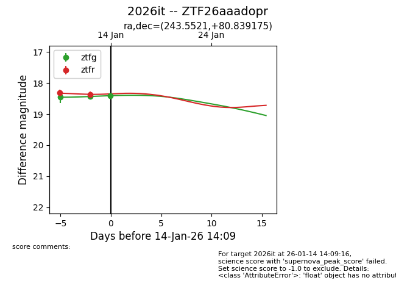
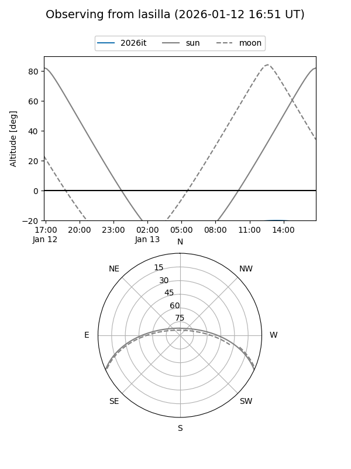
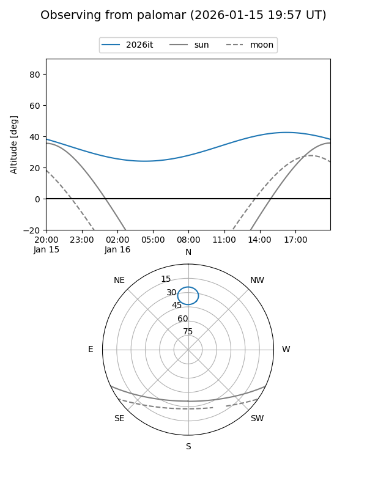
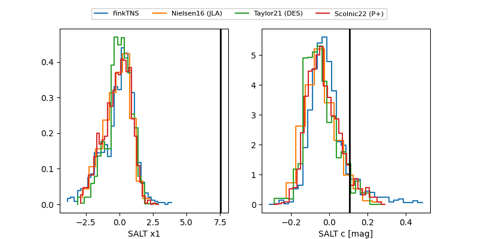

2026it
Target 2026it at 2026-01-14 13:15
Aliases and brokers:
FINK: link
Lasair: link
ALeRCE: link
TNS: link
YSE: link
alt names
ZTF26aaadopr (ztf,fink_ztf)
2026it (tns,yse)
Coordinates:
equatorial (ra, dec) = 243.5521,+80.83918
equatorial (HMS+DMS) = 16:14:12.50,+80:50:21.03
galactic (l, b) = (114.5163,+32.67866)
Flags:
Photometry:
last ztfg=18.43, ztfr=18.37
2 ztfg, 2 ztfr detections
Lightcurve

Visibility


Additional plots
